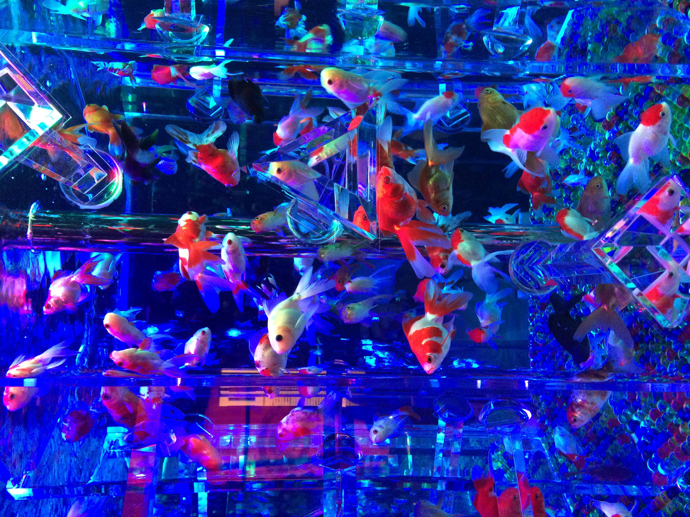

アートアクアリウム美術館GINZA

Instagram
Twitter X
TikTok
Facebook
YouTube
沿革
2007年の初開催以降、日本橋を中心拠点として全国各地および海外へも巡回展示を行っている。
日本橋三井ホールをはじめ、京都の二条城や金沢の金沢21世紀美術館など、歴史や文化の発信地で開催し、2015年にはイタリア・ミラノ、2018年には中国・上海と海外へ進出。
2020年には日本橋で初の常設展を開業させ、その後、銀座に移転し「アートアクアリウム美術館GINZA」を2022年5月に開業。
アートアクアリウム美術館GINZA
アートアクアリウム美術館GINZAは東京・銀座三越内に2022年5月に開業。
日本古来からの金魚鑑賞文化を、現代のアート空間として光・音・香り、そして日本の伝統文化と芸術品で演出する「アートアクアリウム」を常設展として運営している。
年間を通して鑑賞できる常設展示のほか、四季ごとに変わる企画展示を開催している。
館内では水槽や金魚の写真撮影が可能（フラッシュ撮影は禁止している）で、“映えスポット”としてSNS上でも来館者による館内写真、金魚写真が多数投稿されている。
華道家・仮屋崎省吾とのコラボレーション作品「フラワーリウム」の展示や、クリエイターによるイラストレーションアート作品の展示、グッズ販売なども行っている。
展示作品一覧
・銀座万灯龍
・金魚の回廊
・金魚蒐集（金魚コレクション）
・金魚の棚
・金魚の滝
・新金魚品評
・オリガミリウム
・提灯リウム
・金魚の竹林
・フラワーリウム
・浮世絵コレクション
・お面蒐集
・手鞠リウム
・新行燈リウム
・猪目リウム
・金魚の石灯籠
関連項目
・金魚
・アクアリウム
外部サイト
・アートアクアリウム
・Instagram公式アカウント
・Twitter X公式アカウント
・TikTok公式アカウント
・Facebook公式アカウント
・YouTube公式チャンネル